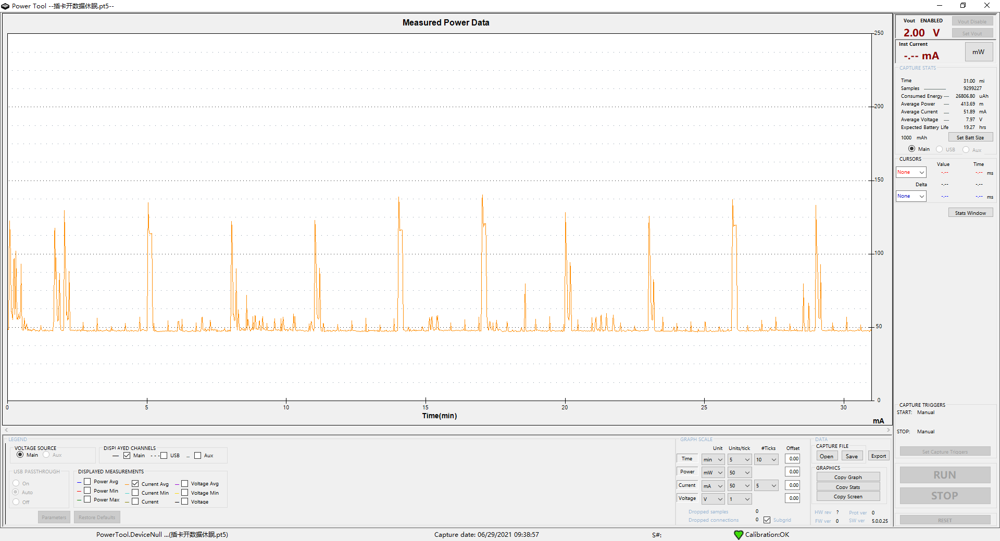
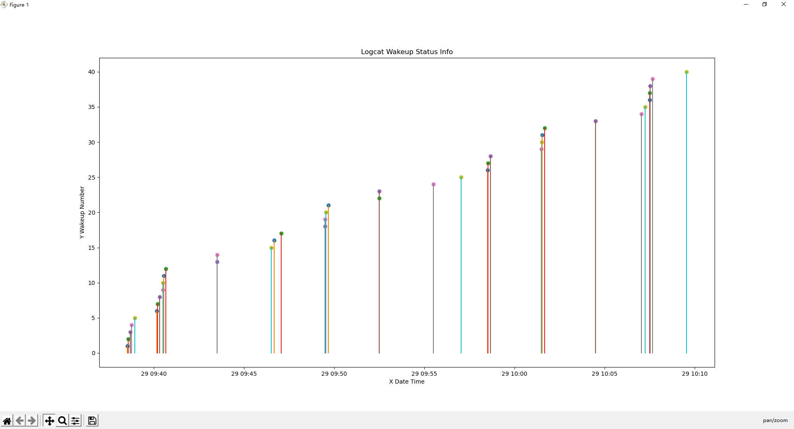
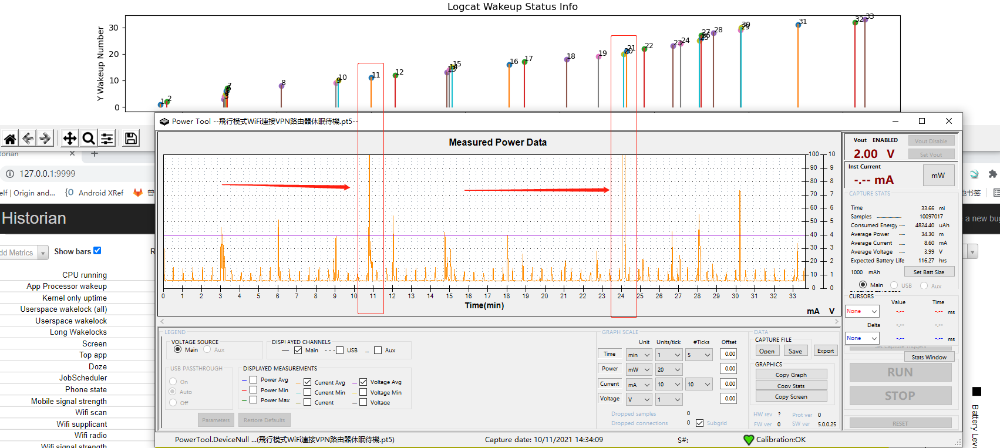
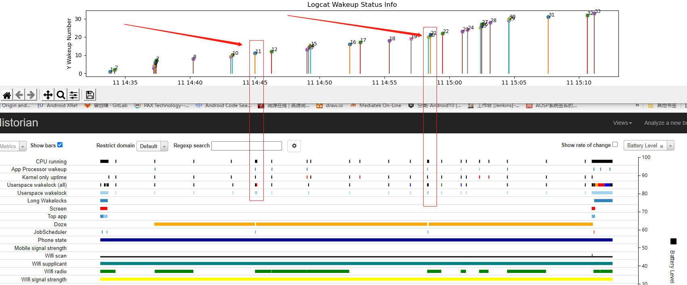
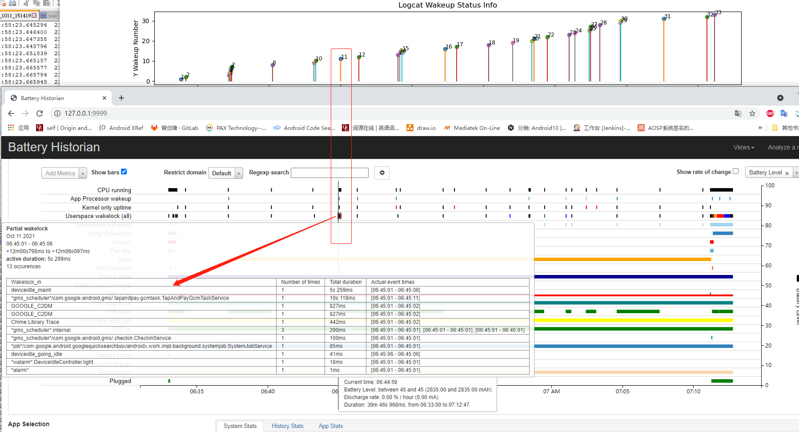
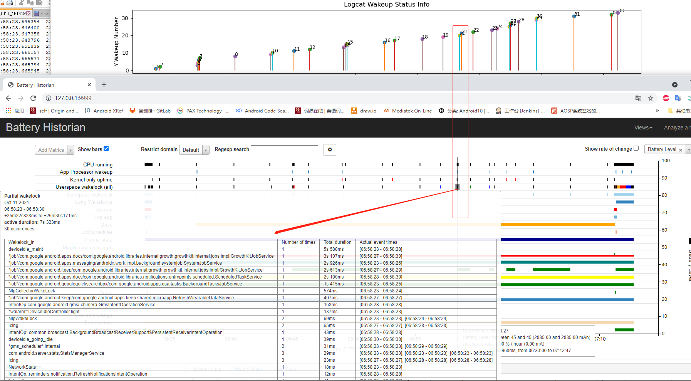

README
通过功耗分布和resume分布可以知道哪些resume导致的问题，进而看对应的resume的log就可以知道系统做了什么导致的功耗问题
code
Power Monitor
实时电流消耗情况如下图所示：

resumed from suspend
resume时间分布图如下

分析思路
获取main log中的唤醒编号，并和PowerMonitor功耗波形图拟合上，注意调整对应上

debugreport和main log中的唤醒编号应该是一一对应的，可以用于确认main log中的唤醒编号的正确性

根据main log中的异常功耗唤醒编号找到debugreport中的wakelock提示信息，下图是11号功耗信息

根据main log中的异常功耗唤醒编号找到debugreport中的wakelock提示信息，下图是20号功耗信息
